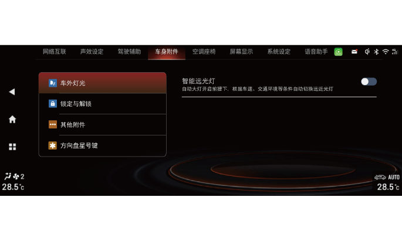

智能远光灯系统通过前挡风玻璃上缘的一个智能前向摄像头传感器，实时探测交通和环境因素，可自动在近光灯和远光灯之间切换。例如晚上行驶在照明不足的道路时，本车驾驶员开启了智能远光灯功能，当系统判断满足远光灯开启条件时，自动点亮远光灯；系统识别到前方车辆较近时，自动将远光灯切换到近光灯。
智能远光灯是一种辅助驾驶功能，在条件适宜的情况下，为您使用最佳的灯光照射方式提供帮助。在交通状况和环境条件需要的情况下，驾驶员始终担负手动转换远光灯和近光灯的责任。
– 智能远光灯可能不能正确识别所有的行驶环境，并且在某些环境下无法正常工作。
– 如果智能前向摄像头被污物、贴纸、冰雪等遮挡，可能导致智能远光灯不可用。
– 如果更改了车辆照明系统（例如改装了前大灯）也可能导致智能远光灯性能下降或功能不可用。
开启智能远光灯
1.整车电源在“ON”挡位，通过音响系统“设置→车身附件→车外灯光”界面，短按“智能远光灯”右侧 软按键设置为开启状态。
软按键设置为开启状态。
该设置有记忆功能，车辆启动后，开启关闭状态将与上次车辆电源关闭时的状态相同。
2. 将车灯开关拧至AUTO位置，打开自动灯光。
–智能远光灯功能开启后，处于准备状态，组合仪表指示灯不点亮。
–自动灯光开启前大灯近光灯时，智能远光灯功能激活，组合仪表指示灯白色点亮。
–当智能远光灯功能激活，且请求远光灯开启后，组合仪表指示灯保持白色点亮，且远光灯 指示灯点亮。
关闭智能远光灯
–将车灯开关拧至AUTO以外的挡位。
–进入音响系统“系统设置→车身附件→车外灯光→智能远光灯”设置智能远光灯为关闭状态。
–手动关闭远光灯。
–车辆电源关闭。
–在与自行车或电动自行车等非机动车辆会车时，应该及时关闭该功能，以防止使对方眩目。
–任何时候均可手动开启和关闭远光灯、远光灯闪光功能。
–大雾、大雨等可能自眩目的情况时会请求开启近光灯。
–车速过低或激烈驾驶会抑制智能远光灯功能。
–驾驶员手动开启远光灯或远光灯闪光会抑制智能远光灯功能。
智能远光灯抑制条件
以下情况远光灯被抑制：
–车速值低于15km/h。
–开启雾灯。
–雨刮开启至HI挡位持续一段时间。
–环境亮度高于阈值。
–检测到路灯、前方近距离有车或对向来车。
以下情况远近光灯切换被抑制：
–侧向加速度或横摆角速度过高。
–高动态状态（ABS或ESP激活）。
–组合仪表显示车速值低于35km/h。
–开启转向信号灯。
功能局限性
使用智能远光灯辅助功能时，可能由于以下原因不能及时甚至根本不能进行自动远近光切换：
–智能前向摄像头前方的风窗玻璃表面被冰雪、雾气、污垢、贴纸等附着物覆盖。
–在灯光昏暗的街道上存在高反光物体。
–在光照不充足的道路上或路旁遇到行人、自行车等情况。
–当前方来车的灯光被挡住时，例如被防撞拦、较高的中央护栏、绿化带等挡住时。
–当跟随前车行驶时，前车尾灯的亮度较暗或不符合国家标准。
–在急转弯/山路/洼地处遇到半掩的迎面行驶车辆。
–在斜坡或颠簸路面中行驶。
–在大雨天、雪天、雾天中行驶。
–智能前向摄像头损坏或电源中断。
— 页面到底了 —